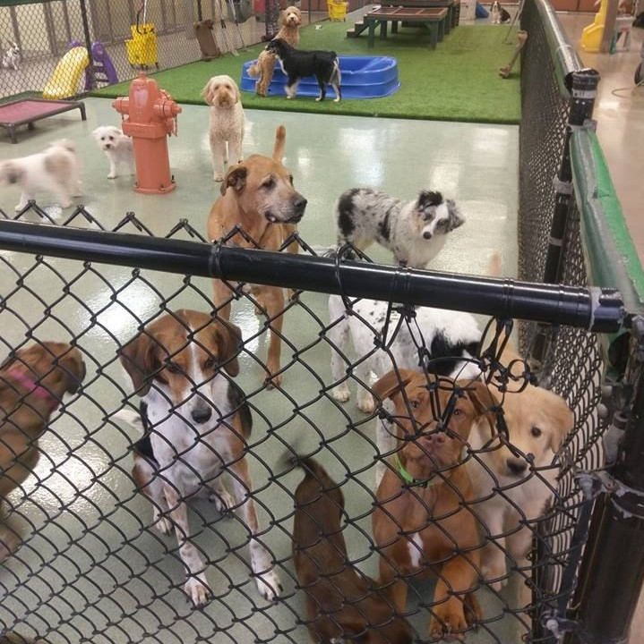
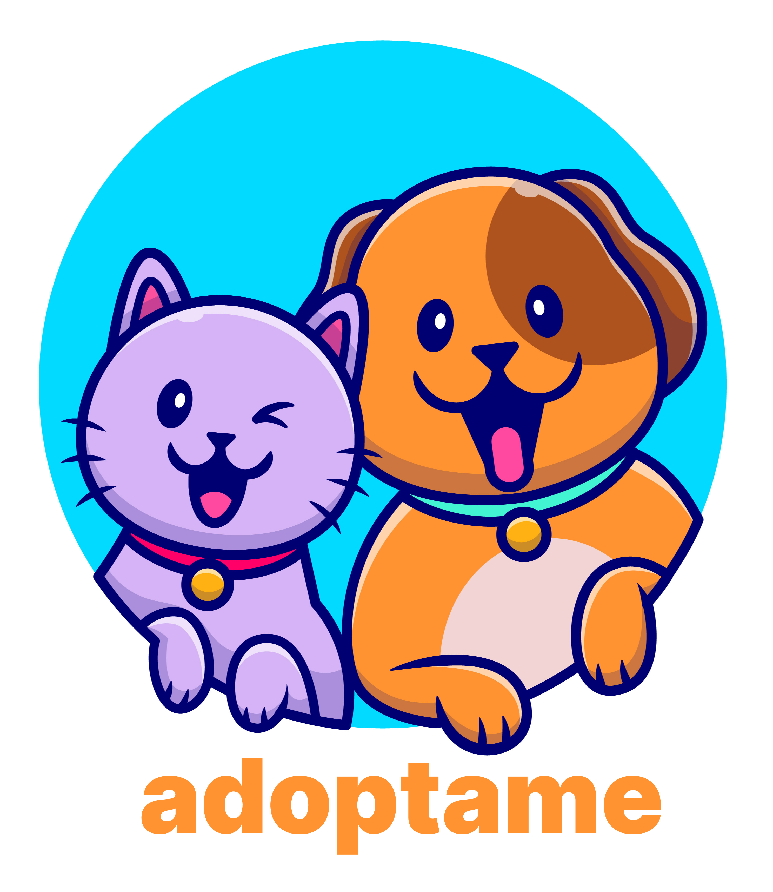
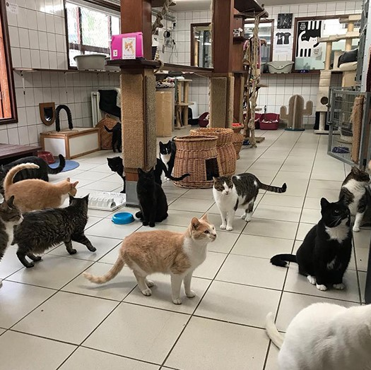
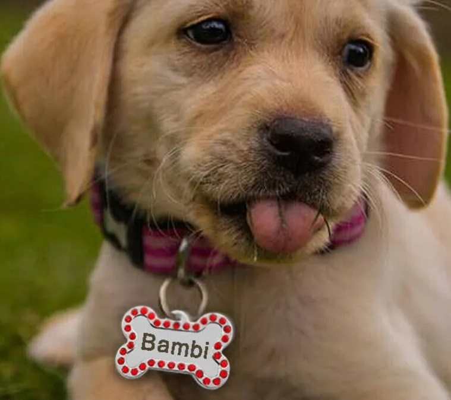
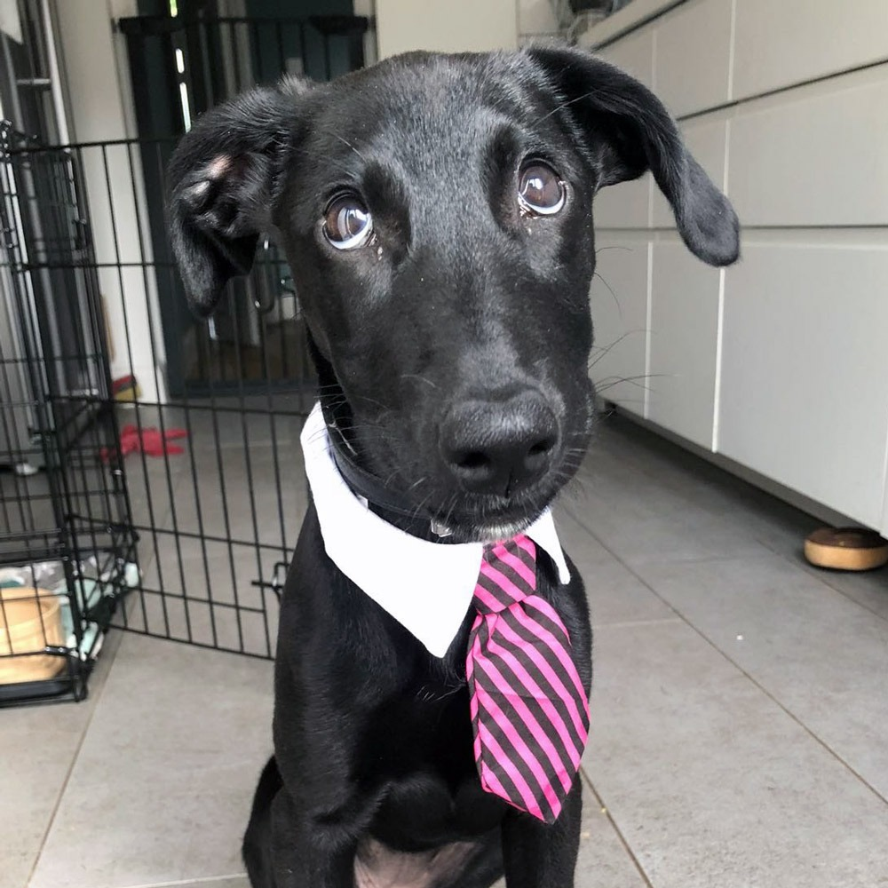
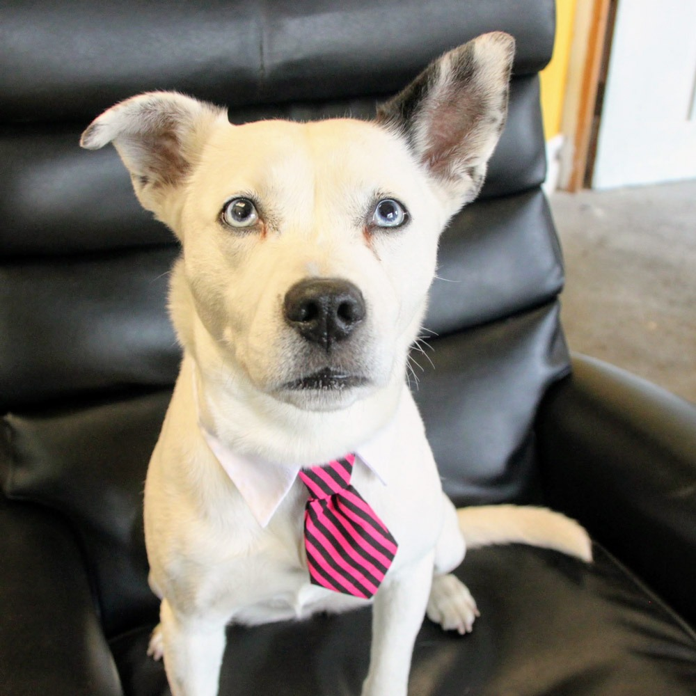

Nosotrxs
Fundación
"Adóptame" es una comunidad originalmente creada por un grupo de amigxs apasionadxs por los
animales
que luego se agrandó con la ayuda de nuevxs colaboradorxs surgidxs de las personas que iban
conociendo el emprendimiento
e incluso de entre quienes adoptaron algunas de las mascotas que pasaron por nosotros. Comenzamos en la
casa
de uno de los fundadores y más adelante alquilamos el centro donde nos encontramos actualmente.



Condiciones de entrega de los animales
Todos los animales se entregan sanos, vacunados y desparasitados con certificado avalado por un
veterinario
y si son adultos, también se encuentran castrados. Todos se entregan con collar y correa, una chapita
identificatoria con el nombre que le elegimos al momento de llegar al refugio y con un código QR
en el dorso de la chapita.

Nuestros ingresos
No pedimos ningún tipo de remuneración por cada animal que entregamos en adopción. Hacemos
este servicio de puro corazón. Solo si es tu deseo colaborar con nosotrxs para ayudarnos a cubrir
nuestros gastos,
te pedimos que nos compres un cafecito. Nuestrxs animalitos te lo agradecerán mucho.



Nuestro refugio
Nos encontramos en Felipe Vallese 571, en el barrio porteño de Caballito. Si querés acercate
y conocé a lxs animalitxs que están buscando hogar.
Veterinarias asociadas
Contamos con la ayuda de 4 clínicas veterinarias que nos ayudan con el cuidado, seguimiento,
castración e insumos para nuestros animales. Si atiendes en ellas a animales adoptados en nuestro
centro, obtendrás un 40% de descuento en cualquier gasto que realices, solo con la
presentación
del código QR que se encuentra en el dorso de la chapita del animal.
Atendé a tus mascotas en:
Atendé a tus mascotas en:
- Consultorio Veterinario Caballito
- Veterinaria Dr. Groppo
- Veterinaria Honorio
- Veterinaria Ambrosetti
- Veterinaria Mr. Patan